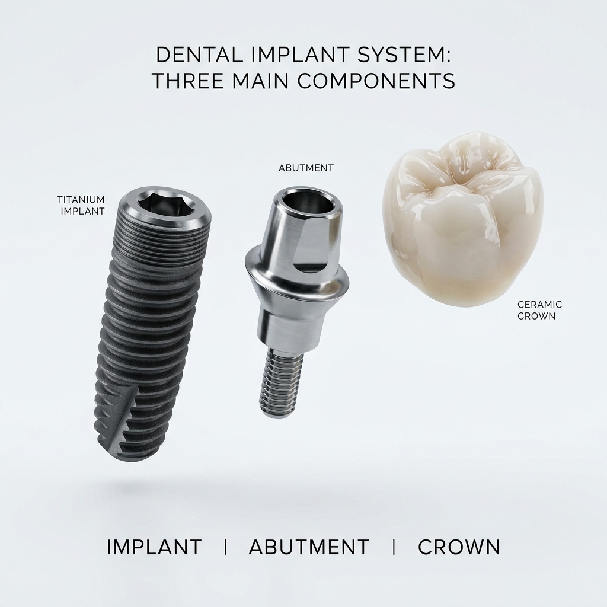
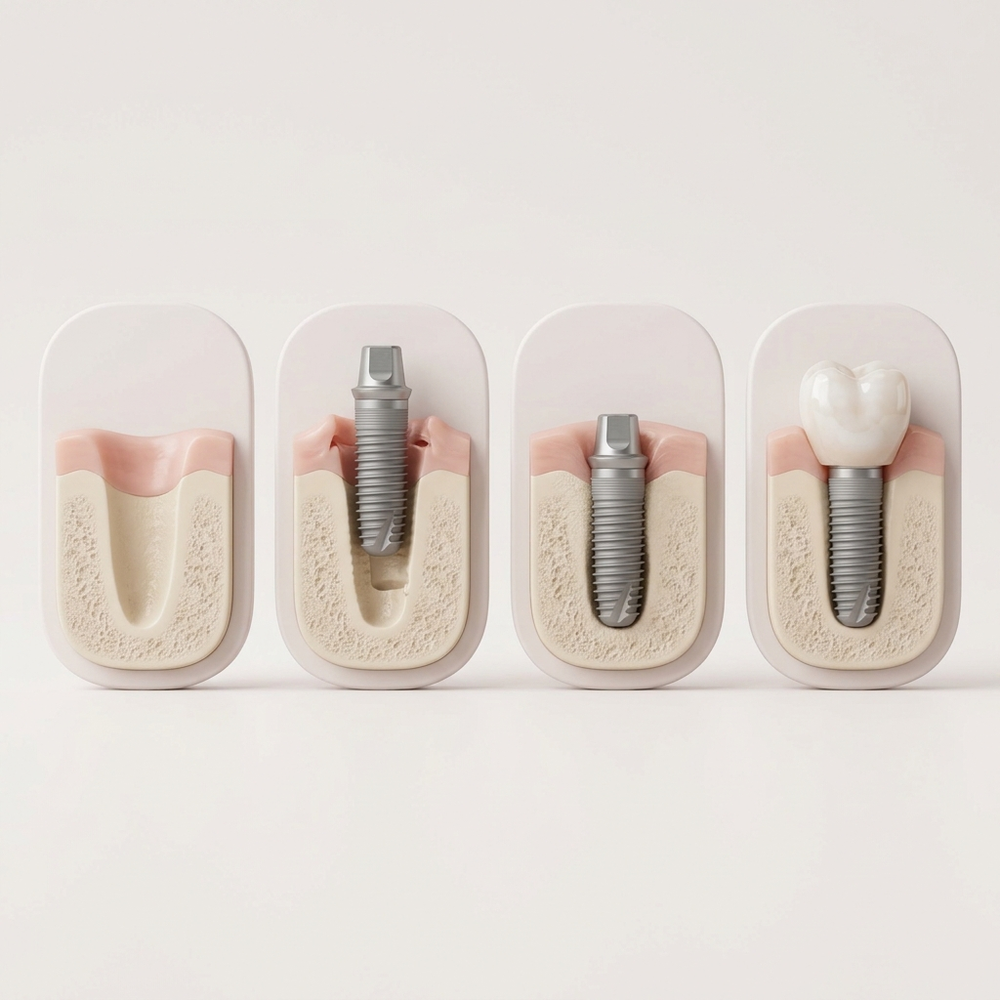
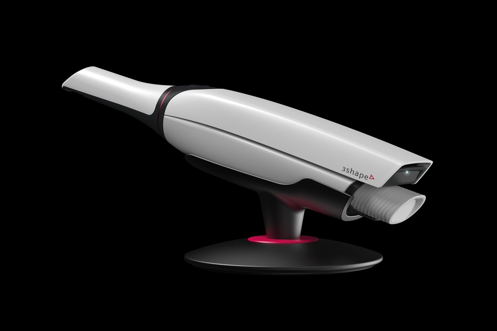

Что такое имплантация зубов простыми словами
Дентальный имплант — это, по сути, искусственный корень зуба. Он изготавливается из биосовместимого титана и аккуратно вживляется в костную ткань челюсти. После того как имплант приживётся, на него устанавливают специальный переходник (абатмент) и сверху фиксируют керамическую коронку.
В результате вы получаете зуб, который ничем не отличается от настоящего — ни по ощущениям, ни визуально. В отличие от мостовидных протезов, имплантация не требует обтачивания здоровых соседних зубов. А в отличие от съёмных протезов, имплант надёжно зафиксирован, не натирает дёсны и выдерживает полноценную жевательную нагрузку.

Кому показана имплантация и когда её делают
Эта процедура является оптимальным решением во многих клинических ситуациях. Мы рекомендуем имплантацию при:
- Потере одного зуба: восстановление дефекта без вреда для соседних зубов.
- Потере нескольких зубов подряд: установка нескольких имплантов для надёжной опоры.
- Полной адентии: отсутствии всех зубов на челюсти.
- Дискомфорте от съёмных протезов: если протез плохо держится или вызывает боль.
- Необходимости сохранить кость: после удаления зуба кость начинает атрофироваться, а имплант даёт ей необходимую нагрузку и останавливает этот процесс.
Стоит отметить, что имплантация подходит не всем — далее в статье мы разберём основные противопоказания.
Виды имплантации — какой метод выбрать
Современная стоматология предлагает несколько протоколов восстановления зубов. Оптимальный вариант подбирается индивидуально после 3D-диагностики.
Классическая двухэтапная имплантация
Наиболее проверенный и надёжный метод. Сначала устанавливается имплант и зашивается под десну. Процесс полного приживления (остеоинтеграции) занимает от 3 до 6 месяцев. Только после этого устанавливается коронка.
Одномоментная имплантация
Это метод, при котором больной зуб удаляется, и в ту же лунку мгновенно устанавливается имплант. Это позволяет сократить количество хирургических вмешательств и ускорить процесс.
All-on-4 и All-on-6
Технологии для пациентов с полным отсутствием зубов. Несъёмный протез всей челюсти фиксируется всего на 4 или 6 имплантах. Часто новые зубы пациент получает уже в день операции.
Имплантация с костной пластикой
Применяется, если зуба нет давно и костная ткань успела атрофироваться. Перед или во время установки импланта врач наращивает объём кости.
Подробнее о каждом методе и ценах можно узнать на нашей странице услуги имплантации зубов.
Как проходит имплантация: этапы от консультации до коронки
Мы используем цифровой протокол, что делает процедуру предсказуемой и максимально комфортной для пациента.
- Консультация и диагностика (1 день). Врач проводит осмотр, делает компьютерную томографию (КТ) и цифровое 3D-сканирование полости рта.
- 3D-планирование операции (2–3 дня). Виртуальная установка импланта в программе exocad. Врач с точностью до миллиметра планирует угол и глубину установки, чтобы избежать повреждения нервов.
- Установка импланта (30–60 мин). Процедура проходит под местной анестезией. Она абсолютно безболезненна и часто переносится легче, чем удаление зуба.
- Период приживления (3–6 месяцев). Имплант прочно срастается с костью.
- Установка абатмента и коронки (2 визита). После сканирования изготавливается индивидуальная керамическая коронка и надёжно фиксируется на импланте.

Имплант vs мост vs съёмный протез — сравнение
Прежде чем сделать выбор, важно честно сравнить альтернативы. В таблице ниже — главные отличия между тремя способами восстановления зубов.
| Критерий | Имплант | Мостовидный протез | Съёмный протез |
|---|---|---|---|
| Срок службы | 20+ лет, часто на всю жизнь | 7–10 лет | 3–5 лет |
| Обтачивание соседних зубов | Не требуется | Да, требуется | Не требуется |
| Профилактика атрофии кости | Да, даёт нагрузку на кость | Нет | Нет (ускоряет атрофию) |
| Эстетика | Не отличается от настоящего зуба | Высокая | Заметен при близком рассмотрении |
| Жевательная нагрузка | 100% — как свой зуб | 60–80% | 30–40% |
| Цена (в Одессе) | От 15 000 грн «под ключ» | От 8 000 грн за единицу | От 6 000 грн |
| Уход | Как за обычными зубами | Как за обычными зубами | Снимать и чистить отдельно |
Вывод: при потере одного или нескольких зубов имплантация — наиболее физиологичное и долговечное решение. Съёмные протезы остаются вариантом тогда, когда имплантация невозможна по медицинским причинам.
От чего зависит стоимость имплантации зубов
Цена на имплантацию — это всегда комплексный вопрос. Она не может быть фиксированной для всех, ведь зависит от многих факторов:
- Бренд импланта: премиальные системы (например, Straumann, Nobel) стоят дороже, но имеют самый высокий процент приживаемости и пожизненную гарантию. Системы среднего класса (MegaGen) являются отличным балансом цены и качества.
- Сложность ситуации: необходимость в удалении зуба или костной пластике.
- Материал коронки: диоксид циркония или металлокерамика.
- Технологии: использование хирургических 3D-шаблонов и цифрового сканера (например, TRIOS) несколько повышает стоимость, но гарантирует абсолютную точность.
В среднем стоимость установки качественного импланта «под ключ» стартует от 15 000 до 35 000 грн. Актуальный прайс клиники смотрите на странице имплантация зубов в Одессе.

Хотите узнать точную стоимость имплантации для вашего случая? Запишитесь на бесплатную 3D-консультацию к врачу Швецу О.В.
Рассчитать стоимость →Больно ли ставить имплант и как проходит восстановление
Прямой ответ: нет, это не больно. Операция проходит под качественной местной анестезией. Вы чувствуете лишь лёгкое давление, но никакой боли.
Дискомфорт может появиться после того, как действие анестезии закончится. Обычно он легко снимается обезболивающими, которые назначит врач, и длится 2–3 дня. Возможен небольшой отёк, который спадает к концу недели.
Современные протоколы (мини-инвазивная имплантация, использование шаблонов) значительно уменьшают травматичность. Первые дни после операции важно избегать горячей пищи, сильных физических нагрузок и пережёвывания твёрдых продуктов на стороне имплантации.
Противопоказания — кому нельзя ставить имплант
Существуют определённые состояния, при которых имплантация не рекомендуется или требует особой подготовки. Они делятся на две группы.
- Абсолютные: некомпенсированный сахарный диабет (высокий и нестабильный уровень сахара), онкологические заболевания в активной фазе, серьёзные нарушения свёртываемости крови, тяжёлые болезни сердечно-сосудистой системы и иммунодефициты.
- Относительные: курение (сильно замедляет заживление), беременность, плохая гигиена полости рта, нехватка костной ткани (решается пластикой) и бруксизм.
Помните, что окончательное заключение может сделать только врач после тщательной 3D-диагностики и сбора анамнеза.
Сколько служит имплант и какие гарантии
Приживаемость качественных имплантов в современной стоматологии составляет 95–98%. Срок службы при правильном уходе — 20 лет и более, очень часто — на всю жизнь.
Что нужно для долгой службы? Идеальная домашняя гигиена, профессиональная чистка зубов раз в полгода и отказ от курения. Большинство ведущих производителей дают пожизненную гарантию на сам титановый корень, а клиника предоставляет гарантию на работу врача и коронку (обычно от 5 до 10 лет).
Как выбрать надёжную клинику для имплантации — чек-лист
Выбор врача и клиники — это 80% успеха. На что обязательно обратить внимание:
- Наличие 3D-диагностики: клиника должна иметь собственный КТ-аппарат и цифровой внутриротовой сканер.
- Цифровое планирование: операция должна планироваться виртуально в специальных программах (например, exocad или Implant Studio).
- Опыт врача: спросите врача-имплантолога о количестве успешно установленных имплантов.
- Бренды: клиника должна работать с проверенными и сертифицированными брендами имплантов.
- Прозрачность: чёткий прайс и условия гарантии.
- Лаборатория: наличие собственной зуботехнической лаборатории или надёжного партнёрства для изготовления качественных коронок.
Часто задаваемые вопросы (FAQ)
Сколько в среднем стоит установка импланта?
В клиниках Одессы установка качественного импланта «под ключ» (имплант + абатмент + керамическая коронка) стоит от 15 000 до 35 000 грн. Конкретная цена зависит от бренда импланта (Straumann, Nobel, MegaGen), материала коронки и необходимости костной пластики. В Harmony Dental цены рассчитываются индивидуально после бесплатной 3D-диагностики.
Можно ли ставить импланты при диабете?
Да, если сахарный диабет компенсирован и уровень глюкозы стабильно контролируется. Решение принимает врач-имплантолог индивидуально после сдачи необходимых анализов и консультации с эндокринологом.
Сколько времени занимает вся процедура от А до Я?
От 3 до 6 месяцев при классической двухэтапной имплантации. При одномоментной имплантации или технологии All-on-4 новые зубы пациент получает за 1–3 дня.
Имплант или мост — что лучше?
Имплант считается значительно лучшим решением: он предотвращает атрофию костной ткани и не требует обтачивания соседних совершенно здоровых зубов, в отличие от мостовидного протеза. Срок службы импланта — от 20 лет, моста — 7–10 лет.
Можно ли ставить имплант сразу после удаления зуба?
Да, это одномоментная имплантация. Для её проведения необходимо отсутствие острого воспаления вокруг корня и достаточное количество костной ткани для первичной фиксации импланта.
Что делать, если недостаточно кости?
В таком случае перед или во время имплантации проводится костная пластика — синус-лифтинг (на верхней челюсти) или направленная костная регенерация. Это позволяет восстановить необходимый объём кости и провести имплантацию даже в сложных случаях.
Может ли имплант отторгнуться через годы?
Риск отторжения качественных имплантов составляет 1–2%. Через годы это может произойти лишь при серьёзных нарушениях гигиены, травмах или тяжёлых системных заболеваниях. Регулярные осмотры раз в 6 месяцев снижают этот риск до минимума.
Существует ли возможность поэтапной оплаты?
Да. Harmony Dental предлагает поэтапную оплату: отдельно за хирургический этап (установка импланта) и отдельно за ортопедический этап (коронка). Точные условия рассрочки уточняйте на бесплатной консультации по номеру +38 068 779 45 47.
Реальные кейсы имплантации — до и после
Реальные работы врача-стоматолога-хирурга, имплантолога Швеца Олега Валентиновича с пациентами клиники Harmony Dental в Одессе. Все фото публикуются с согласия пациентов.
Восстановление утраченного жевательного зуба нижней челюсти
Клиническая картина: разрушенный жевательный зуб нижней челюсти с невозможностью восстановления терапевтическим путём. Пациент жаловался на боль при жевании и нарушение эстетики.
Решение: удаление разрушенного зуба, установка дентального импланта по цифровому протоколу и фиксация керамической коронки после остеоинтеграции.


Восстановление зубов с помощью дентальной имплантации
Клиническая картина: частичная потеря зубов, нарушение жевательной функции и эстетики улыбки.
Решение: цифровое 3D-планирование, установка имплантов и изготовление эстетических керамических коронок.


Комплексное восстановление улыбки
Клиническая картина: множественные дефекты зубного ряда, влиявшие на функцию и внешний вид пациента.
Решение: комплексный план лечения — имплантация и протезирование с восстановлением эстетики улыбки.


Имплантация в эстетической (фронтальной) зоне
Клиническая картина: отсутствие зуба в зоне улыбки — повышенные требования к эстетике и повторению естественного контура десны.
Решение: имплантация с формированием десневого контура и фиксация индивидуальной керамической коронки на циркониевом абатменте.


Заключение
Имплантация — это инвестиция в ваше здоровье, комфорт и уверенность на долгие годы. Современные цифровые технологии сделали эту процедуру максимально безопасной, точной и безболезненной.
Если вы рассматриваете возможность имплантации в Одессе — начните с бесплатной консультации с 3D-диагностикой в Harmony Dental. Врач-стоматолог-хирург, имплантолог Швец Олег Валентинович подробно оценит вашу клиническую ситуацию, ответит на все вопросы и предложит оптимальный метод восстановления улыбки.
Бесплатная 3D-консультация
Напишите нам в удобный мессенджер — администратор ответит в течение 15 минут в рабочее время и предложит удобное время визита.
Или звоните: +38 068 779 45 47